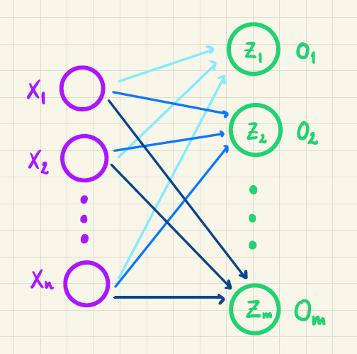
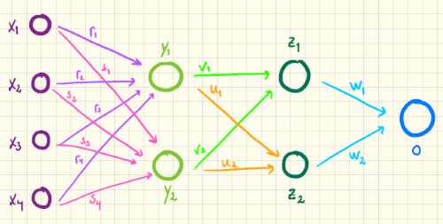

Materialer om kunstige neurale netværk
På denne side findes forskellige noter om kunstige neurale netværk. Noterne varierer i sværhedsgrad og i matematisk fokus.
Noterne er skrevet til elever i gymnasiet og kan læses uafhængigt af hinanden. Til gengæld er den overordnede beskrivelse af noterne nedenfor nok nemmest at læse for lærerne.
Sværhedsgraden af noterne er klassificeret fra "forholdvis nem" (*) til "svær" (****).
Helt overordnet kan man sige, at et neuralt netværk er en funktion, der tager et antal målte variable som input. Det kunne for eksempel være en vælgers svar på en kandidattest. Som output giver det en klasse/kategori, for eksempel et parti vælgeren bør stemme på. I et neuralt netværk indgår nogle ikke-lineære funktioner kaldet aktiveringsfunktioner, som i sig selv er matematisk interessante. For at finde et neuralt netværk, der giver gode klassifikationer, minimeres en tabsfunktion. Til det formål får man brug for at finde partielt afledte, som bruges i forbindelse med gradientnedstigning.
Historisk set startede man med såkaldte perceptroner, som vi har en note om her, men vi anbefaler egentligt at bruge sit krudt på at dykke ned i en eller flere af nedenstående noter.
En kort videogennemgang, hvor vi fortæller lidt om, hvad AI er, kan findes her.
Kunstige neuroner

Noten behandler byggestenene til de mere generelle kunstige neurale netværk nemlig de kunstige neuroner. De kunstige neuroner bruges – som de beskrives her – til binær klassifikation. Opdateringsreglerne til justering af vægtene udledes ved at minimere squared error tabsfunktionen ved hjælp af gradientnedstigning. Vi bruger her sigmoid-funktionen som aktiveringsfunktion.
| Type af klassifikation | Aktiveringsfunktion | Tabsfunktion |
|---|---|---|
| Binær | Sigmoid | Squared error |
Sværhedsgrad: **
Simple neurale netværk

Noten behandler et kunstigt neuralt netværk, dog med den væsentlige forsimpling, at der kun er to skjulte lag, hvor hvert af disse lag kun består af én kunstige neuron. Det har den fordel, at det nu giver mening at tale om feedforward og backpropagation, men uden at sidstnævnte drukner i kædereglen af flere variable. Til gengæld bruges der tid på at forklare og anvende den kæderegel, som eleverne allerede kender. Også her udledes opdateringsreglerne ved at minimere squared error tabsfunktionen ved hjælp af gradientnedstigning.
| Type af klassifikation | Aktiveringsfunktion | Tabsfunktion |
|---|---|---|
| Binær | Sigmoid | Squared error |
Sværhedsgrad: ***
Simple kunstige neurale netværk til multipel klassifikation

Noten behandler det tilfælde, hvor man ikke er interesseret i binær klassifikation, men derimod ønsker at kunne prædiktere blandt mere end to klasser. Noten er holdt simpel på den måde, at det beskrevne netværk ikke indeholder skjulte lag, men outputlaget består i stedet af flere neuroner. Det får den konsekvens, at den anvendte aktiveringsfunktion nu er den såkaldte softmax funktion, som kan se som en udvidelse af sigmoid-funktionen. Derudover behandles også cross-entropy tabsfunktionen, som minimeres ved hjælp af gradientnedstigning.
| Type af klassifikation | Aktiveringsfunktion | Tabsfunktion |
|---|---|---|
| Multipel | Softmax | Cross-entropy |
Sværhedsgrad: ****
Kunstige neurale netværk

Noten gennemgår et mere generelt kunstigt neuralt netværk med to skjulte lag, som hver består af to neuroner. Netværket bruges her til binær klassifikation. Som aktiveringsfunktion anvendes igen sigmoid-funktionen og vægtene opdateres ved at minimere squared error tabsfunktionen ved hjælp af gradientnedstigning. Da de skjulte lag består af flere neuroner end én, må kædereglen for funktioner af flere variable bringes i spil for at finde de partielle afledede, som anvendes i forbindelse med gradientnedstigning.
Desuden gives der i denne note også en forklaring på fordelene ved cross-entropy tabsfunktionen sammenlignet med squared error tabsfunktionen, der linkes til en side hvor opdateringsreglerne i et helt generelt kunstigt neuralt netværk forklares (ved hjælp af en masse indekser!) og endelig gives der en overordnet beskrivelse af convolutional neural networks, som bruges i forbindelse med prædiktion af billeder.
| Type af klassifikation | Aktiveringsfunktion | Tabsfunktion |
|---|---|---|
| Primært binær | Sigmoid | Squared error |
Sværhedsgrad: ****